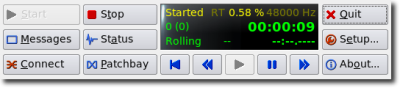
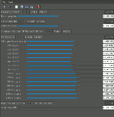

Grafische Konfiguration
Dieser Artikel wurde für die folgenden Ubuntu-Versionen getestet:
Ubuntu 14.04 Trusty Tahr
Zum Verständnis dieses Artikels sind folgende Seiten hilfreich:
Das JACK Audio Connection Kit ist die Grundlage für ein Tonstudio unter Linux. Das hier beschriebene Programm Qjackctl  bietet eine grafische Oberfläche zur Steuerung des Soundservers jackd und zum Verbinden und Verschachteln der JACK-Clients. Ergänzt um das JACK Rack und den JackEQ, sowie In- und Output-Clients entsteht ein komplettes, virtuelles Studio.
bietet eine grafische Oberfläche zur Steuerung des Soundservers jackd und zum Verbinden und Verschachteln der JACK-Clients. Ergänzt um das JACK Rack und den JackEQ, sowie In- und Output-Clients entsteht ein komplettes, virtuelles Studio.
Dieser Artikel soll in Grundzügen die Einrichtung und Bedienung des JACK Audio Connection Kit und typischer Werkzeuge erklären. Dabei stehen die grafischen Werkzeuge zur Bedienung von JACK im Vordergrund. jackd kann natürlich auch auf der Kommandozeile bedient werden. Die Manpage beinhaltet dazu ausführliche Informationen. Wer dagegen Grundlagen und Hinweise zur Arbeitsweise sucht, findet diese im Artikel JACK.
Qjackctl¶

Installation¶
Folgendes Paket muss installiert [1] werden:
qjackctl (universe)
 mit apturl
mit apturl
Paketliste zum Kopieren:
sudo apt-get install qjackctl
sudo aptitude install qjackctl
Bedienung¶
Qjackctl kann bei Ubuntu-Varianten mit einem Anwendungsmenü über einen Eintrag "Multimedia -> JACK Control" gestartet [2] werden.
jack einrichten¶
Das JACK Audio Connection Kit einzurichten gilt als schwierig. Mit Qjackctl und etwas gutem Willen (sprich: verschiedene Einstellungen zu probieren) ist es aber nicht zu schwer. Hat man einmal gute Einstellungen für das eigene Soundsystem gefunden und verstanden, wie Clients verbunden und verschachtelt werden, ist der Rest kein Problem.
Grundsätzlich ist es von Vorteil, einen Echtzeitkernel und eine Tonstudio/Konfiguration zu nutzen, um besonders niedrige Latenzen zu erzielen. Dies ist jedoch mit vielen Soundkarten und dem "normalen" generic-Kernel nicht mehr zwingend nötig, wenn die Ansprüche nicht extrem hoch sind. Dies hängt davon ab, wie viele Tonspuren, Effekte und Clients man nutzt, wie hoch die Ansprüche der Clients an die Hardware sind und welche Hardware zur Verfügung steht - also von vielen Faktoren.
Sind die Ansprüche besonders hoch (jede Menge Spuren, Effekte, etc.) ist die Tonstudio-Konfiguration samt Echtzeitkernel Pflicht und man muss sich ggf. auch mit fortgeschrittener Prozess-Steuerung auseinander setzen.
Einstellungen¶
| Qjackctl Setup |
Das Setup-Menü von Qjackctl stellt mehrere Reiter bereit. Die wichtigsten Einstellungen werden im Reiter "Settings" (siehe nebenstehendes Bildschirmfoto) vorgenommen.
In der Regel wird die ALSA-default-Soundkarte genutzt. Analoge Soundkarten kommen dabei mit der voreingestellten Samplerate von 44100 Hz zurecht, manche digitale Soundkarten (AC97, HDA-Intel) arbeiten ausschließlich mit 48000 Hz.
Der Parameter "Realtime" muss angewählt werden, um Probleme mit zu hohen Latenzen zu vermeiden. Zu hohe Latenzen führen zu "xruns", die im "Messages"-Fenster aufgeführt werden. Mit Echtzeitkernel können die "Frames/Periode" ggf. herabgesetzt werden, mit dem generic-Kernel müssen sie hingegen auf relativ hohe Werte gesetzt werden (512, 1024, 2048).
Die Anzahl der Kanäle liegt bei vielen günstigen Soundkarten bei je zwei Eingangs- und Ausgangskanälen. Der Mikrophon-Eingang ist dabei nur ein (meist der linke) Kanal des Line-In und wird nur zusätzlich durch einen Mikrophon-Vorverstärker geleitet. Bei diesen Karten sind Mikrophon-Eingang und Stereo-Line-In nicht gleichzeitig (sinnvoll) nutzbar. Etwas bessere Soundkarten verfügen über einen getrennten Mikrophon-Eingang und haben somit drei Kanäle auf der Eingangsseite und mindestens zwei auf der Ausgangsseite - hier sollte die Herstellerbeschreibung Aufschluss geben.
Optionen¶
Im Reiter "Options" können Befehle bzw. Skripte angegeben werden, die vor oder nach dem Start oder Beenden von jack ausgeführt werden. Dies ist besonders hilfreich, um konkurrierende Soundserver zu steuern.
Falls man zwei Soundkarten verwenden möchte, kann unter Script nach Start ausführen alsa_out aufrufen.
Zum Beispiel für einen USB-Kopfhörer:
alsa_out -d hw:1 -q 0 &
Des Weiteren können Einstellungen zur Statistik und zum Beibehalten der Patchbay-Einstellungen vorgenommen werden.
Ansicht¶
Im Reiter "Display" können Einstellungen zum Aussehen von Qjackctl vorgenommen werden.
Verschiedenes¶
Der Reiter "Misc" bietet weitere Einstellungen, unter anderem zum Speichern der jack-Startoptionen (i.d.R. ~/.jackdrc).
Clients verbinden¶
Über die Schaltfläche "Connect" öffnet man das Fenster mit den Client-Verbindungen.
Auf der linken Seite befinden sich die Eingänge (Line-In, Mikro, Audio-Player, etc.), auf der rechten Seite die Ausgänge (Line-Out, Harddisc-Recorder, etc.). Durch Anwahl je eines Kanals eins Output- und eines Input-Clients und einen Klick auf die Schaltfläche "Connect" wird eine Verbindung hergestellt.
In nebenstehendem Screenshot wurde die Ausgabe des Players Aqualung sowohl mit der Ausgabe der Soundkarte als auch mit den Aufnahme-Kanälen des Soundeditors mhWaveEdit verbunden. Eine letzte Verbindung (linker Kanal von Aqualung-Out und mhWaveEdit-In) steht noch aus.
Um einzelne Verbindungen aufzuheben, müssen der jeweilige Client auf Input- und Output-Seite markiert werden, worauf die Schaltfläche "Disconnect" angewählt wird. Über die Schaltfläche "Disconnect all" können alle Verbindungen aufgehoben werden.
Wurden nach dem Start von Qjackctl weitere Clients gestartet, kann mit der "Refresh"-Schaltfläche die Ansicht im Verbindungs-Fenster aktuallisiert werden.
Clients verschachteln¶
Die "Patchbay" dient der Verschachtelung von Clients. Verschiedene Routing-Profile können gespeichert und bei Bedarf geladen werden. In Verbindung mit Tonstudio-Software wie Ardour nähert man sich dem professionellen Audio-Produktions-Bereich, was in diesem Artikel zu weit führen würde.
JackEQ¶
JackEQ ist ein Drei-Band-Equalizer mit vier Stereo-Eingangskanälen, zwei Dual-Stereo AUX-Wegen, sowie Master- und Monitor-Stereo-Ausgängen.
Installation¶
| JackEQ |
Folgendes Paket muss installiert [1] werden:
jackeq (universe)
mit apturl
Paketliste zum Kopieren:
sudo apt-get install jackeq
sudo aptitude install jackeq
Bedienung¶
JackEQ kann über einen Menüeintrag gestartet werden [2]; jackd muss dazu bereits laufen bzw. über Qjackctl gestartet worden sein. Den Menüeintrag findet man unter "Anwendungen -> Multimedia -> JackEQ" (Xfce).
Die Anschlüsse des EQ können wie unter Clients verbinden beschrieben mit anderen Clients verbunden werden.
Die Bedienung des EQ selbst erfolgt im Wesentlichen durch das Verschieben der Regeler und Aktivieren von Schaltflächen mit der Maus. (Die Bedienung über die Tastatur ist möglich, aber gewöhnungsbedürftig bis umständlich.)
JACK Rack¶
JACK Rack ist wie ein Rack im richtigen Tonstudio zu sehen, in dem man seine (LADSPA-) Effekt-Geräte verstaut. Die LADSPA-Effekte bieten eine Menge von Geräten, wie Equalizier, Filter, Amplifier und viele mehr.
Installation¶
|  |
| JACK Rack |
Folgendes Paket muss installiert [1] werden:
jack-rack (universe)
mit apturl
Paketliste zum Kopieren:
sudo apt-get install jack-rack
sudo aptitude install jack-rack
Bedienung¶
JACK Rack kann bei Ubuntu-Varianten mit einem Anwendungsmenü über den Eintrag "Multimedia -> JACK Rack" gestartet [2] werden.
Ein Rack kann mit beliebig vielen Effekten bestückt werden und man kann Zusammenstellungen speichern. Um auf verschiedene Spuren verschiedene Effekte anzuwenden, startet man JACK Rack in mehreren Instanzen. Jede Instanz bildet einen Jack-Client und kann wie oben beschrieben verbunden werden.
Ein neues Rack wird mit zwei Ein- und Ausgangskanälen gestartet. Da man einen Kanal mit beliebig vielen anderen Kanälen verbinden kann, reicht die Anzahl von zwei Kanälen pro Rack in der Regel aus, man kann sie aber erhöhen. Verändert man die Anzahl der Kanäle eines Rack, wird die aktuelle Zusammenstellung der Effekte verworfen. Daher sollte man die Anzahl der Kanäle festlegen, bevor man das Rack bestückt.
Links¶
Arbeiten mit QJACKCTL auf GNU/Linux
 - Tutorial, auch verfügbar als PDF-Version
- Tutorial, auch verfügbar als PDF-VersionJACK - Grundlagen und Hintergrundinformationen zum JACK Audio Connection Kit
Soundsystem
 Informationen zu den verschiedenen Systemen zur Audioausgabe
Informationen zu den verschiedenen Systemen zur AudioausgabeTonstudio
Leitartikel
- Erstellt mit Inyoka
-
 2004 – 2017 ubuntuusers.de • Einige Rechte vorbehalten
2004 – 2017 ubuntuusers.de • Einige Rechte vorbehalten
Lizenz • Kontakt • Datenschutz • Impressum • Serverstatus -
Serverhousing gespendet von